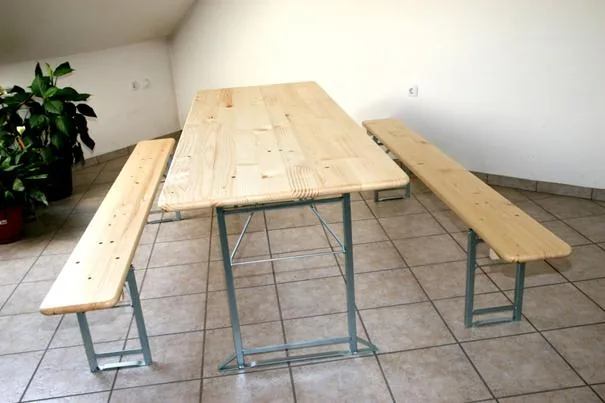
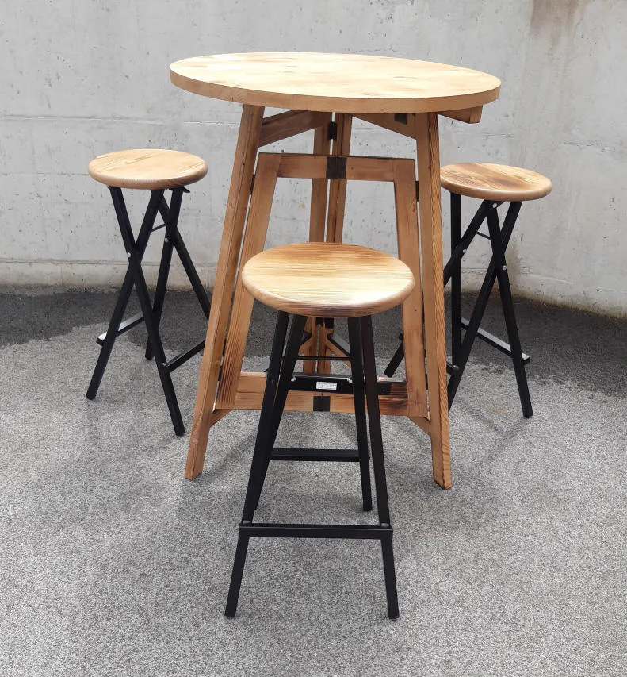
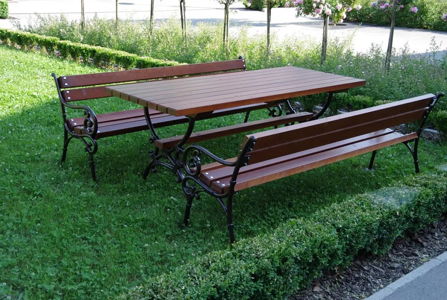
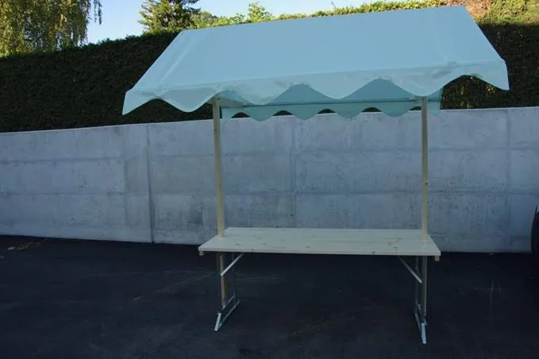
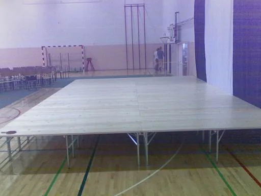
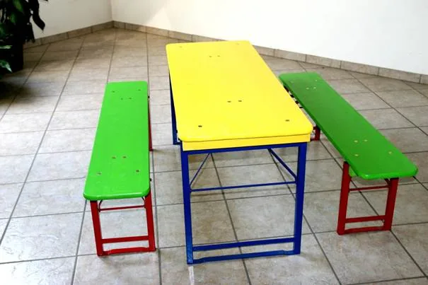
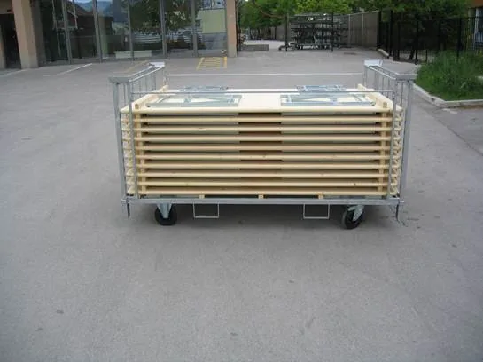
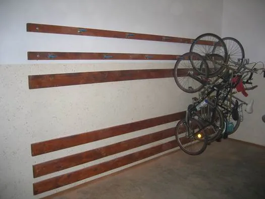

Katalog izdelkov
Podatki o materialih in dimenzijah so prepisani z obstoječe strani podjetja. Vse izdelke izdelujemo tudi v dimenzijah po naročilu.
Zložljive gasilske garniture URZunanja in notranja uporaba
Za gasilske veselice in podobna srečanja. Klopi z naslonom so primerne tudi za dvorane z večurnim sedenjem. Noge in naslon se zložijo; za shranilo ostane samo velikost lesa.
- Ogrodje
- cevi 25 x 25 mm, 4 mm ploščato železo
- Površina
- surovo ali pocinkano, belo-modra
- Miza
- 220 x 50 do 90 (std. 70) x 2,9 cm
- Klop
- 220 x 25 x 2,9 cm

Zložljivi kovinski stoli in mizeTeren, dvorane, lokali
Stol je popolnoma zložljiv, močne izdelave in pri shranilu ne zavzame veliko prostora. Mize so lahko različnih dolžin in širin; manjše dimenzije so praktične za teren.
- Okovje
- cevi 25 x 25 mm, cinkano ali barvano
- Les
- smreka 29 mm, prozorni lak

Barska miza in barski stolTudi iz žganega lesa
Zložljiva barska miza in zložljivi barski stol iz smrekovega lesa, pocinkane noge iz cevi 25 x 25 mm. Posebna izvedba: žgan les s posebnim premazom v videzu postaranega lesa. Na spodnjih prečkah je možna dodatna aluminijasta zaščita.
- Miza
- višina 110 cm (tudi 78 cm), premer 80 cm
- Stol
- višina 80 cm, sedišče 35 cm
- Voziček
- za 10 miz

Klopi in mize za parkeJavne površine
Lito aluminijasto ogrodje, ki ne rjavi, prašno lakirano. Masivne smrekove letve z zaobljenimi robovi, impregnirane in dvakrat barvane z UV odporno barvo. Ogrodje se privijači na betonske podstavke ali v obstoječa tla. Komplet miza in dve klopi, klopi tudi s košem.
- Letve
- smreka 43 x 90 mm
- Miza
- 195 x 80 cm, višina 75 cm

Podstrešne stopnice LUXLastna proizvodnja od 2011
Zložljiva lestev iz masivnega smrekovega lesa, stopničke vezane na lastovičji rep, dvižni mehanizem s plinsko vzmetjo. V zaprtem položaju so vsi deli znotraj ohišja. Izvedba tudi z belo pločevinasto oblogo spodnjega pokrova.
- Višina prostora
- 2 m do 3,6 m
- Obremenitev
- do 160 kg
- Okvir
- panelna plošča 18 mm
Zložljive stojniceTržnice, sejmi, degustacije
Plod našega znanja, izdelane v naši mizarski delavnici. Sestavljanje in razstavljanje brez orodja. Izvedba s streho iz cerade, barva po katalogu, z valovitim ali ravnim robom in po želji z napisom.
- Pult
- 1514 x 757 x 20 mm, ravno ali pod kotom 20 ali 35 stopinj
- Višina
- 900 mm
- Površina
- 2,30 m²

Zložljiv oder za nastopeVelikost po naročilu
Elementi so med seboj povezani s povezovalnim sistemom; en element 50 x 250 cm ima tri noge. Pocinkano okovje, smrekov les 29 mm, 2x lakiran. Oder ima lahko tudi zložljive stopnice.
- Višina
- 620 mm
- Okovje
- cevi 25 x 25 mm, 3 do 4 mm pločevina

Otroške garnitureDom, animacije, vrtci
Zložljive otroške garniture UR za večje število otrok. Okovje prašno lakirano, les barvan z vodnimi barvami.
- Okovje
- cevi 25 x 25 mm, 3 mm pločevina
- Les
- smreka 50 x 130 x 2,3

Voziček in nosilec za garnitureShranilo in transport
Voziček-paleta iz vroče pocinkanih jeklenih cevi s snemljivo ograjo; palete se skladiščijo ena na drugi. Stenski nosilec iz pocinkanega ploščatega jekla, pritrjen s tremi vijaki.
- Voziček
- 10 kompletov garnitur
- Nosilec
- 2 garnituri (2 mizi do 80 cm, 4 klopi)

Koši, nosilci za zastave, obešala za kolesa, obešalniki, zračniki, ročaji, prezračevalni trakDrobni kovinski program
Koši za zunanjo ureditev okolice v treh velikostih. Eloksirani ročaji v srebrni, zlati, rjavi in črni barvi. Prezračevalni trak iz aluminijaste pločevine v čokoladno rjavi barvi, širine 84, 99 in 104 mm, dolžine 25 m.
- Koši
- manjši, srednji, veliki
- Ročaji
- eloksiran aluminij
